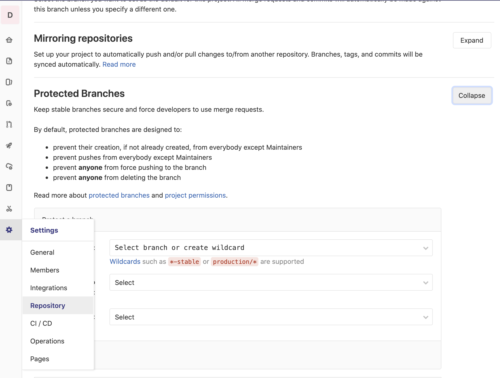
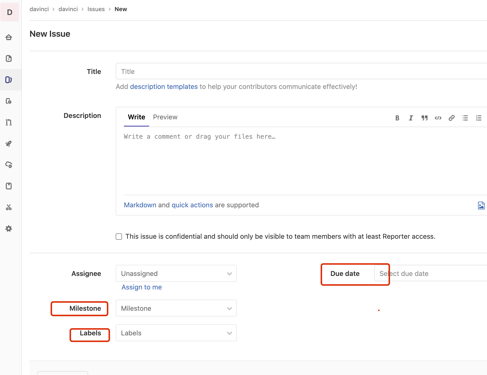
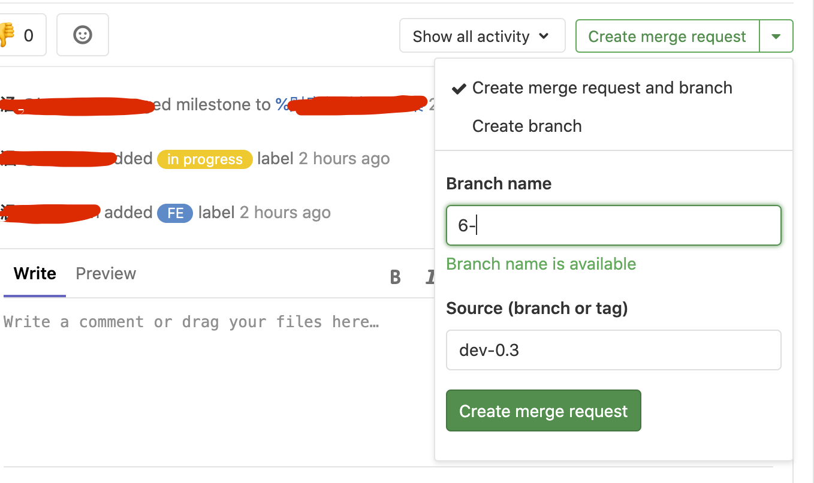
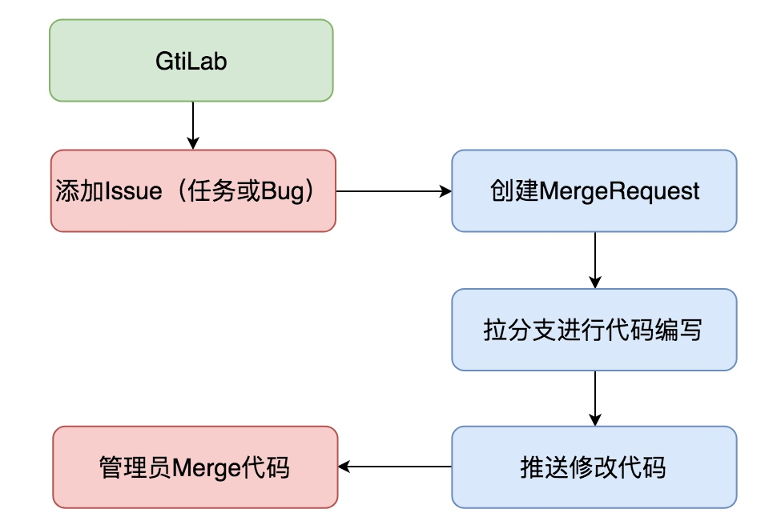

gitlab 分支策略
考虑到gitlab一般在企业内部使用，一般不存在社区开发者，所以在管理上不会采用github的upstream/origin双仓库模式。gitlab下，开发者们面向一个仓库进行提交即可；
设置对分支的保护权限
顾名思义，分支的权限必不可少，它可以约束开发者们的提交行为和提交策略。避免失误操作将未测试过的代码强制提交到生产分支；developer可以不关心；

issue与Milestones
issue可以理解为一个最小原子的任务，多个任务组成一个 milestones；Milestones 可以理解为某个时间区间内的任务集；一个Milestones可包含多个issue； 当该Milestones中所有issue完成，则标志着此Milestones的结束；
创建issue和mr
- 创建一个issue

- 关联一个mr

- branch name
branch name 会以issue的序号开始，然后抓取title中的英文和数字做连接。
可采用index-categroy-content-[username]-[time]的自定义方式，括号部分可选
category
- feature
- bugfix
- chore
- enhance
content，一到三个词简述任务
username，任务认领人
time，创建分支的时间，一般
201217或者1225
- source
基于什么分支创建当前分支，feature/chore/enhance选择dev-0.3, bugfix选择env-dev
提交代码流程

1 | git fetch # 获取issue关联的分支名 |
commits规范
'type(module) some desc'
1 | type = [ |
review代码的参考标准
- 格式化后的代码，在vscode中安装
prettier工具，设置ctrl+s默认对当前页进行prettier格式化； - 所有commits必须要关联issue，如果没有issue要新建issue然后关联mr（merge request），基于当前mr提交代码；
- 原则上，不能有肉眼可见的bug，一般review代码时会进行简单的测试；
- 其他规则（代码规范）
代码规范
原则上，所有新提交的代码参考项目代码风格即可。简述为下面几个方面
- 原则上，变量名含义精准，（ps：严禁全局作用域中出现单字符命名空间；）
- 不要求一定要加注释或者不加注释，我们的愿景是能够书写无注释就能看懂的代码。根据业务逻辑难易程度，自行决定。 尽量英文注释；
- 不建议提交大量重复代码，须做好代码的抽象复用；
- 尽量使用被主流浏览器支持的的es规范书写代码，原则上新es规范下已有的工具类和函数，不重复造轮子；
- 其他涉及
html/css/javascript相关的推荐规范会渐进式纳入规范集；